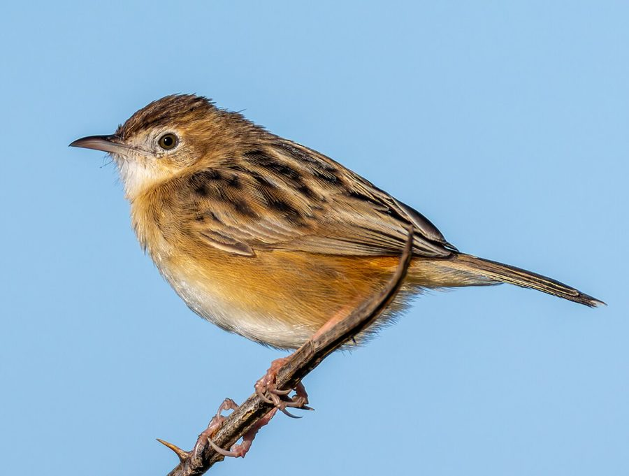

जिंक फुदकीZitting Cisticola
Cisticola juncidis · Cisticolidae · BRD-0067

- Scientific name
- Cisticola juncidis (Rafinesque, 1810)
- Family
- Cisticolidae
- Hindi
- जिंक फुदकी
- Status here
- native
- IUCN
- LC
When to look कब देखें
Present all year.
जिंक फुदकी / Zitting Cisticola
Cisticola juncidis (Rafinesque, 1810) — Cisticolidae
जिंक फुदकी (जि़टिंग सिस्टिकोला / पंखा-पूंछ फुदकी) — पूर्वी उत्तर प्रदेश के नम घास के मैदानों, नदी किनारे के नरकटों और धान के खेतों में पाया जाने वाला एक अत्यंत छोटा, फुर्तीला और मुख्य रूप से घास में रहने वाला कीटभक्षी पक्षी (grass warbler) है। इसकी सबसे बड़ी पहचान इसकी पीठ पर बने गहरे भूरे रंग के सघन धारीदार निशान (heavily streaked brown back), सफ़ेद पेट, और छोटी पंखे जैसी पूंछ जिसके सिरों पर सफ़ेद बिंदु (short fan-shaped tail with white tips) होते हैं। यह पक्षी अपने प्रजनन काल के दौरान किए जाने वाले अद्भुत प्रदर्शन उड़ान (display flight) के लिए प्रसिद्ध है; नर पक्षी हवा में लहरदार अंदाज़ (bounces) में बहुत ऊपर उड़ता है और प्रत्येक उड़ान के उछाल के साथ एक तीखी, यांत्रिक आवाज "जिंक... जिंक... जिंक" (sharp "zitt... zitt... zitt" call) निकालता है। यह घास के भीतर अत्यधिक छिपा रहता है और प्रदर्शन उड़ान के बाहर इसे देख पाना काफी कठिन होता है।
Quick Identification त्वरित पहचान
| Feature | Description |
|---|---|
| Size | Tiny, light grass-warbler (9–11 cm total length); short rounded body |
| Colouration | Warm buffy-brown upperparts boldly streaked with dark brown-black; unstreaked whitish underparts |
| Tail | Short, fan-shaped tail; feathers have dark subterminal bands and distinct white tips |
| Display Flight | Male flies high in a series of bouncing undulations, calling with each bounce |
| Bill | Short, slender, slightly curved bill, pinkish-flesh with a dark upper ridge |
| Legs | Long, slender legs of a pinkish-flesh colour, adapted for gripping grass stalks |
Field tip: Walk through tall grasslands or wet paddy fields during the monsoon breeding season. Look up to find a tiny dot flying in high, bouncy waves. Listen for a loud, repeating, mechanical "zitt... zitt" whistle that matches the bird's bounces. The female resembles the male but lacks the display flight and is shown in the field tip.
Morphology आकारिकी
Biometrics (typical measurements in the northern Indian plains):
| Measurement | Range |
|---|---|
| Total length | 90–110 mm |
| Wing (flattened chord) | 45–52 mm |
| Tail | 30–40 mm |
| Tarsus | 18–21 mm |
| Bill (culmen from base) | 9–11 mm |
| Weight | 7–10 g |
Plumage: Upperparts are warm buff-brown, heavily streaked with broad blackish-brown stripes on the crown and back. The rump is unstreaked reddish-buff. The underparts are white, wash with warm buff on the flanks and breast. The tail is dark brown, with a black band near the tip and a clean white tip on each feather, which forms a white rim when the tail is fanned open.
Bare parts: The bill is pinkish-flesh, with a dark brown culmen. The irises are olive-brown. The legs and feet are pale pinkish-flesh.
Vocalisations
Highly vocal during the breeding season during display flights; silent when hiding in winter.
- Display call: A loud, sharp, metallic, repeating whistle: zitt... zitt... zitt..., uttered at regular intervals of about one second, synchronized with the peak of each bouncing flight loop.
- Alarm call: A rapid, dry, chattering squeak: chit-chit-chit, produced when flushed from its nest grass.
Behaviour & Ecology व्यवहार और पारिस्थितिकी
- Cryptic hiding: Outside of the display flight, it is highly secretive. It runs through the grass stalks near the ground, behaving more like a mouse than a bird. It is very difficult to flush, only flying a short distance before dropping back into cover.
- Aerial display: During the pre-monsoon and monsoon, the male climbs to a height of 20–30 metres and flies in loops over his territory to attract females. This displays the white-tipped fan tail.
- Insect hunting: Feeds on insects by searching grass leaves, taking leafhoppers and caterpillars.
Life Cycle / Phenology जीवन चक्र
- Breeding season: June to September in UP, matching the growth of monsoon grass.
- Nesting: Builds a highly specialized "soda-bottle" or purse-shaped nest of dry grass blades woven together with spider webs.
- Nest site: Built low down (within 20–50 cm of the ground) inside a clump of tall grass (like Kans Saccharum spontaneum) or paddy crop, binding live grass leaves into the structure.
- Clutch size: 3 to 5 pale blue or white eggs, speckled with red-brown.
- Incubation: 12–15 days, incubated mainly by the female.
- Fledging: Both parents feed the young. The chicks fledge in 11–15 days and remain hidden in the grass.
Host Plants or Prey आहार
Primary food items:
- Insects: Grasshoppers, small beetles, bugs, ants, leafhoppers, and caterpillars.
- Spiders: Small grass spiders collected from webs.
Predators / Natural Enemies शत्रु
- Raptors: Shikras (Accipiter badius) and wintering harriers hunt them.
- Mammals: Feral cats, mongoose, and rodents raid ground nests.
- Reptiles: Garden lizards and grass snakes consume eggs and small nestlings.
Agricultural / Human Relevance कृषि प्रासंगिकता
Paddy helper. By feeding heavily on leafhoppers, planthoppers, and caterpillars that attack rice crops, the Zitting Cisticola acts as a natural biological control agent in paddy fields.
Conservation and legal status: Protected under Schedule IV of the Wildlife Protection Act, 1972. It is common, but populations are threatened by the use of broad-spectrum chemical insecticides in rice paddies and the early burning or cutting of native grasslands along riverbanks.
Expected Locally स्थानीय रूप से अपेक्षित
Not a field record. Written from published accounts for eastern Uttar Pradesh. No confirmed local sighting yet — if you have seen it, that is what the atlas needs.
अभी तक स्थानीय पुष्टि नहीं। यह विवरण प्रकाशित स्रोतों से है, किसी अवलोकन से नहीं।
A common resident throughout the Basti district. They are regularly observed in wet grasslands bordering the Ghaghra river floodplains and in local paddy fields during the monsoon in the Harraiya, Basti, and Vikramjot blocks. Their bouncing display flight is a regular sight in July and August.
Distribution वितरण
Global range: A cosmopolitan species found across southern Europe, Africa, South Asia, East Asia, and northern Australia.
In India: A widespread resident throughout the plains and low hills.
In Uttar Pradesh: A common resident state-wide in all riverine and grassy plains.
In Basti district / eastern UP: Regularly recorded year-round in grassy margins and wet fields in all blocks.
Research Questions शोध प्रश्न
Anyone can investigate these | कोई भी इन प्रश्नों की जाँच कर सकता है
- How many seconds does a male Zitting Cisticola display flight last on average before he returns to the grass? — Record flight times in local fields.
- What is the preference of Cisticolas for nesting in cultivated rice crops versus native Kans grass in Basti? / जिंक फुदकी धान के खेतों और जंगली कांस घास में से किसमें अधिक घोंसला बनाना पसंद करती है? — Locate and map active nests.
- Does the rate of the "zitt" call increase when a human observer approaches the nest territory? — Monitor call intervals under different conditions.
- How do Cisticolas interact with Plain Prinias when foraging in the same grass patch? — Document interspecific territorial displays.
- Does the use of chemical pesticides in paddy fields affect the nesting success of Cisticolas? / क्या धान के खेतों में रासायनिक कीटनाशकों के छिड़काव से जिंक फुदकी के घोंसलों की सफलता दर प्रभावित होती है? — Compare nest survival between organic and chemical paddy fields.
Similar Species मिलती-जुलती प्रजातियाँ
| Species | How to tell apart | हिंदी |
|---|---|---|
| Plain Prinia (Prinia inornata) | Much larger; much longer tail; unstreaked grey-brown back; lacks bouncing display flight | मैदान फुदकी — बड़ा आकार, लंबी पूँछ, धारी रहित पीठ |
| Ashy Prinia (Prinia socialis) | Much larger; ashy-grey crown and back; orange underparts; longer tail; loud ringing calls | राख-रंग फुदकी — धूसर सिर और पीठ, नारंगी पेट |
| Common Tailorbird (Orthotomus sutorius) | Bright green back; rust-coloured crown; long central tail feathers; hops in bushes, not grass | दर्जी चिड़िया — हरी पीठ, लाल सिर, पेड़ों और झाड़ियों में रहना |
Field rule: Tiny grass-warbler with a heavily streaked brown back, a short white-tipped fan-shaped tail, making a bouncing flight high over grass while calling a repeating mechanical "zitt... zitt... zitt", is a Zitting Cisticola.
Taxonomy & Classification वर्गीकरण
Original description. Constantine Samuel Rafinesque described the Zitting Cisticola as Sylvia juncidis in 1810 in his Caratteri di Alcuni Nuovi Generi (p. 95). The type locality was Sicily, Italy. Kaup introduced the genus Cisticola in 1829. The genus name Cisticola is derived from the Ancient Greek kiste (box/chest) and the Latin colere (to inhabit), referring to the neat nest shape. The specific name juncidis is Latin, meaning of rushes, referencing its preferred habitat.
Subspecies. Eighteen subspecies are recognized globally. The subspecies resident in northern India and UP is:
| Subspecies | Authority | Range | Notes |
|---|---|---|---|
| C. j. cursitans | (Franklin, 1831) | India, Nepal, Bangladesh, Myanmar | UP subspecies; has slightly richer rufous upperparts than the European nominate form C. j. juncidis |
Family and order placement. Placed in the order Passeriformes, family Cisticolidae (cisticolas and allies).
Phylogenetic notes. The genus Cisticola is a large group of Old World grass warblers, with Cisticola juncidis exhibiting the widest global distribution in the family.
IUCN status rationale. Listed as Least Concern (LC) due to its extremely large range and stable population, showing high tolerance to agricultural grasslands (paddy fields).
Photo Gallery फोटो गैलरी
References संदर्भ
- Rafinesque, C. S. (1810). Caratteri di Alcuni Nuovi Generi e Nuove Specie di Animali e Piante della Sicilia. Palermo, p. 95. [original description]
- Ali, S. & Ripley, S. D. (1999). Handbook of the Birds of India and Pakistan. Vol. 8. Oxford University Press, New Delhi.
- Grimmett, R., Inskipp, C. & Inskipp, T. (2011). Birds of the Indian Subcontinent. 2nd ed. Christopher Helm, London.
- Kennerley, P. & Pearson, D. (2010). Reed and Bush Warblers. Christopher Helm, London.
- BirdLife International (2024). Cisticola juncidis. IUCN Red List of Threatened Species. Ver. 2024.
- GBIF Occurrence Data — Cisticola juncidis, Uttar Pradesh (2010–2025).
Source file: species/fauna/birds/zitting_cisticola.md